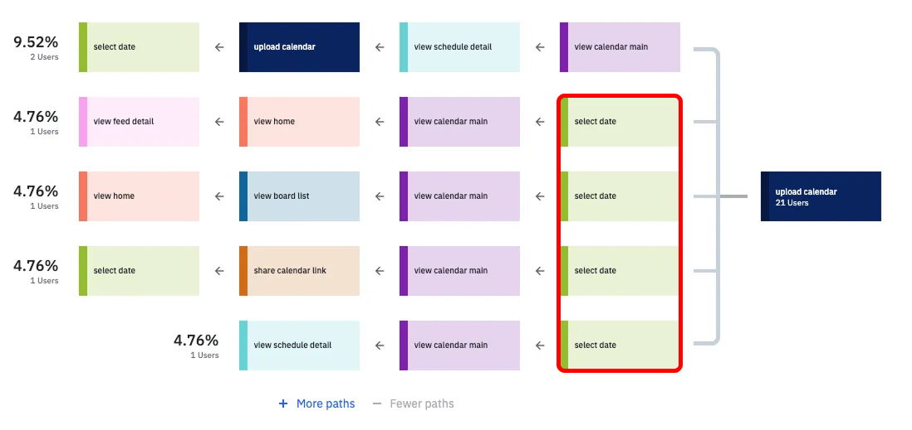
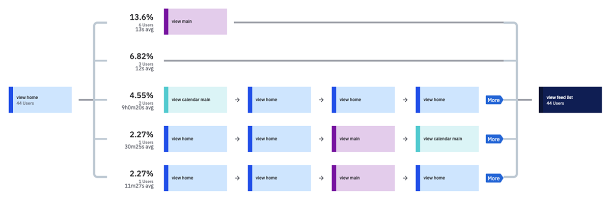
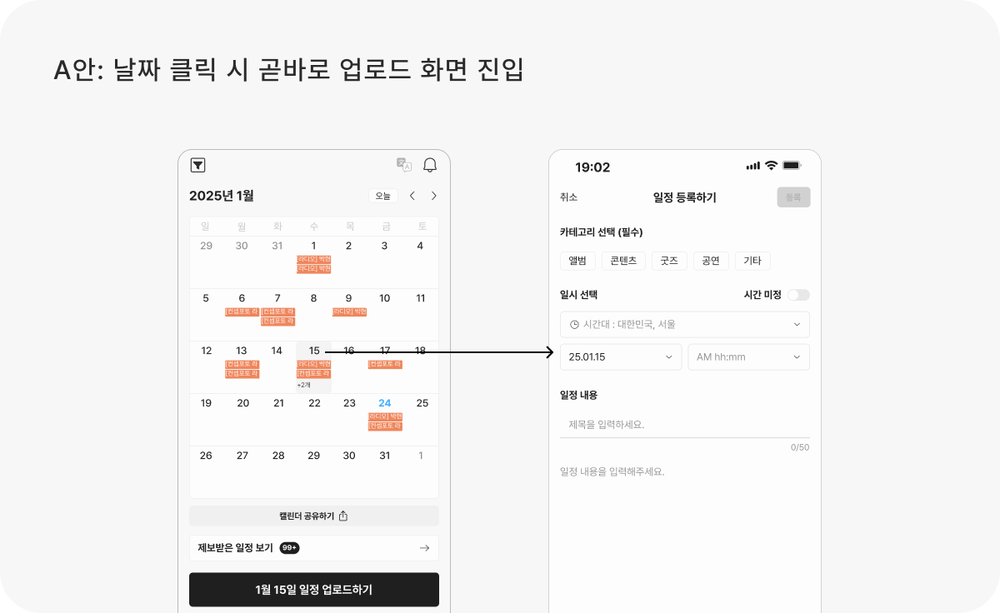
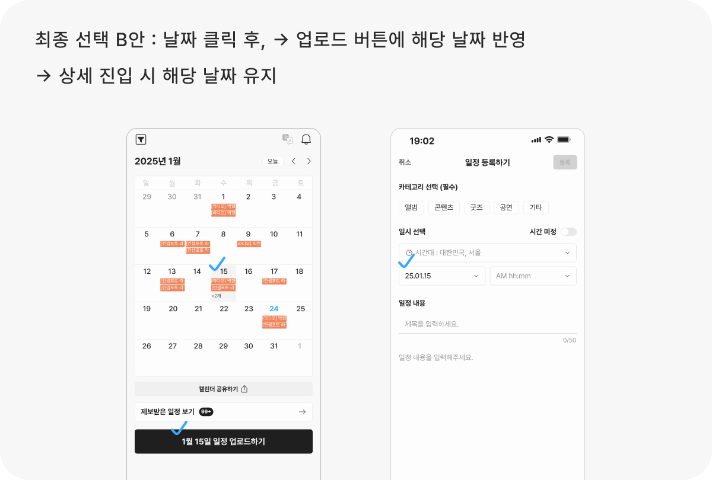
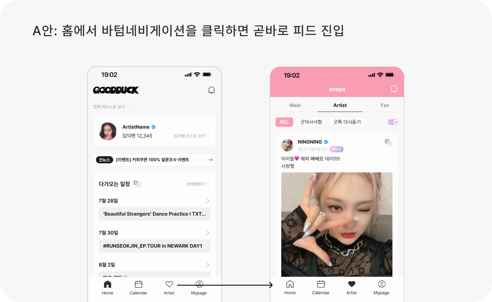
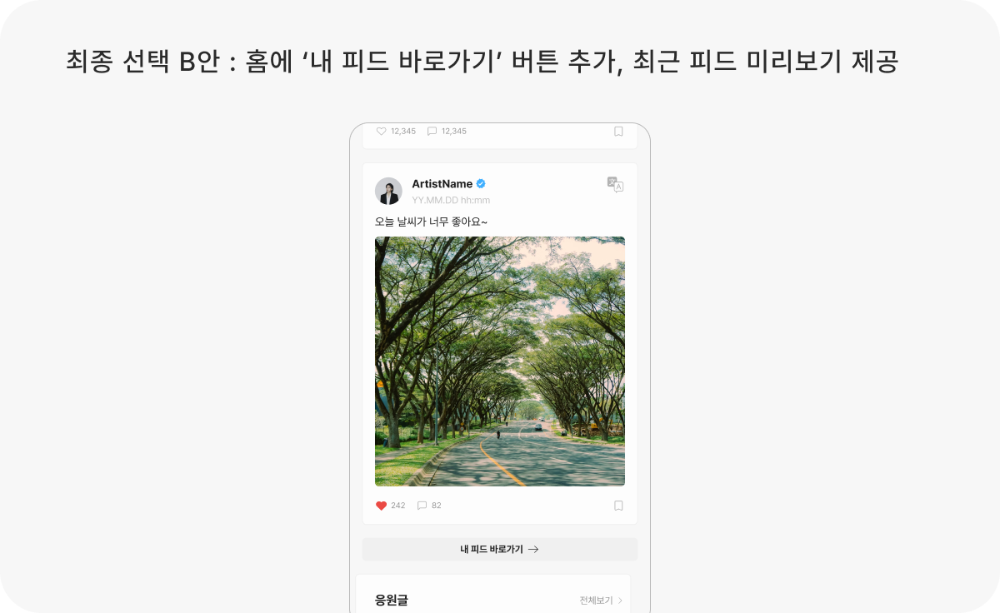

배경
5명의 아티스트 인터뷰
1. 인터뷰에서 3명의 아티스트가 “캘린더에서 날짜를 클릭하고 업로드 버튼 누른 후 상세에서 다시 날짜를 선택해야 해서 불편하다.
날짜를 클릭하고 바로 등록하고 싶다.” 라는 페인포인트가 있었어요.
2. 인터뷰에서 아티스트가 “내 피드를 보러가기까지 클릭이 너무 많아서 불편하다” 라는 페인포인트가 있었어요.
실제로 피드로 가려면 홈 → 메인화면 → 아티스트 탭 플로우를 거쳐야했어요.
데이터로 검증하기
그렇다면 소수의 아티스트가 아닌,
대부분의 아티스트들은 어떨지 데이터로 확인해보았어요.
1. 실제로는 날짜를 클릭하지 않아도, 업로드버튼을 누르고 바로 상세로 진입할 수 있어요.
그러나 약 47% 아티스트가 날짜를 클릭하고 (Select date) 일정을 업로드 (upload calendar) 하고 있었어요.

2. 약 79.3%의 아티스트가 홈화면에서 피드리스트로 진입하고 있었고, 홈화면에서 여러 루트를 거쳐 진입하고 있었어요.
홈화면에서 메인을 거쳐 피드 리스트로 진입하는 경우가 많았는데, 이 경우에도 두번의 클릭이 필요했어요.

디자인 여정
사용자의 플로우를 단축시키려면 어떻게 해야할까?
1. 캘린더

- 가장 직관적이고 유저가 원하는 플로우에요.
- 그러나 날짜마다 페이지 이동 처리가 필요하여 개발 공수 때문에 현재 상황에서는 어려웠어요.

- 개발 난이도가 적고, 버튼 누르고 들어가면 클릭한 날짜가 유지되서 유저가 날짜를 다시 선택하지 않아도 되요.
또한 유저에게 “내가 클릭한 날짜가 반영되었다”는 인지 확보가 가능해요.
2. 아티스트 피드 접근

- 피드 진입 플로우는 단축되지만, 아티스트 메인을 보기 어려워지고, 기획과 개발에서 다른 기능과의 충돌 가능성도 있었어요.

- 홈에 피드와 바로가기 버튼만 추가하면 되어서 개발 공수가 적어져요.
- 홈에서 피드를 바로 볼 수 있으니, 피드를 보기 위해 클릭하는 일이 적어져요.
- 홈 → 아티스트 피드를 바로 볼 수 있는 유저 니즈를 충족할 수 있어요.
의사결정 기준은 “데이터로 검증된 Pain Point를 해결하면서도
개발 공수를 고려해 가장 실행 가능성이 높은 안을 선택하는 것”
성과
캘린더를 업로드하는 아티스트 유저들이 50% 증가했어요!
(25년 9월 8일 출시 기준 이전 데이터 비교)
회고
이번 프로젝트에서 가장 큰 배움은 “데이터와 실제 사용자 맥락을 동시에 고려해야 한다”는 점이었어요.
처음에는 인터뷰에서 들은 소수의 불편 경험이 과연 보편적인 문제인지 확신하기 어려웠어요.
하지만 데이터를 통해 47%와 79.3%라는 수치로 문제를 검증하면서,
정성적 인사이트와 정량적 데이터가 맞물릴 때 설득력 있는 문제 정의가 가능하다는 것을 느꼈어요.
또한, 단순히 “유저 입장에서 가장 직관적인 플로우”를 고집하기보다는,
개발 공수·리스크와 사용자 경험을 동시에 고려한 최적의 안을 선택하는 의사결정 과정이 중요하다는 것을 체감할 수 있는 경험이었어요.